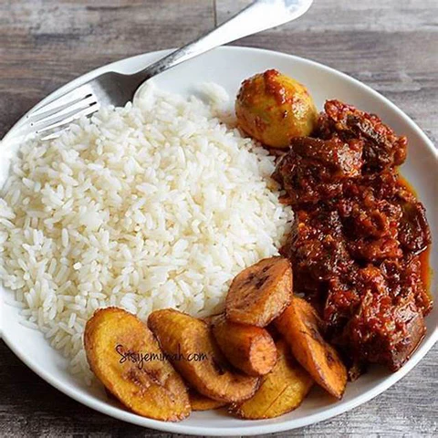

Rice and Stew with Plantain Recipe
A "Sunday Special" delicious Nigerian meal consisting of white rice,
rich tomato stew and chicken, and sweet golden fried plantains.
Preparation Time
- Total: Approximately 40 minutes
- Preparation: 10 minutes
- Cooking: 30 minutes
Ingredients
For the Rice
- 3 cups long-grain rice
- Water
- Salt to taste
For the Stew
- Fresh Tomatoes
- Pepper
- 3 red bell peppers(Tatashe)
- 2 scotch bonnet peppers(Ata Rodo)
- 3 large onion(2 blended, 1 sliced)
- Ginger and Garlic
- ¼ cup of vegetable oil
- 4 seasoning cubes(Maggi)
- 1 teaspoon curry powder
- 1 teaspoon thyme
- Salt to taste
For the Assortment(Beef)
- 500g cow meat
- 1 onion(sliced)
- 2 seasoning cubes
- 1 teaspoon thyme
- 1 teaspoon Ginger and Garlic powder
For the Fried Plantain
- 3 ripe plantains
- Vegetable oil for frying
- Pinch of salt(optional)
Instructions
Prepare the Beef
- Wash the cow meat thoroughly.
-
Place in a pot and add sliced onions, seasoning cube, thyme, salt, and
ginger/garlic powder and root
- Add a small amount of water.
- Boil for 25–30 minutes or until soft.
-
Once tender, you may fry it lightly in oil (optional) for extra
flavor.
Prepare the Stew
-
Prepare the Stew Blend tomatoes, red bell peppers, scotch bonnet,
ginger and garlic, and 2 onion until smooth.
- Heat oil in a pot for 2–3 minutes.
- Add tomato paste and fry for 3–5 minutes.
-
Pour in blended mixture and cook on medium heat for 15–20 minutes
until it thickens and oil rises to the top.
- Add curry, thyme, seasoning cubes, salt, and sliced onions.
- Add the cooked beef stock.
- Simmer for 5–10 minutes.
NB: Your stew should be rich, thick, and slightly oily on top.
Cook the Rice
- Wash rice thoroughly until water runs clear.
- Add water slightly above the rice level.
- Add salt.
- Boil for 15–20 minutes until soft.
- Drain excess water (if any) and steam for 2 minutes.
Fry the Plantain
- Peel plantains.
- Slice diagonally.
- Heat oil in a frying pan.
- Fry on medium heat until golden brown on both sides.
- Remove and drain on paper towel.
- Sprinkle a tiny pinch of salt (optional).
Serve hot rice on a plate. Add a generous scoop of stew with cow meat on
top. Place fried plantain by the side. Enjoy with chilled water or zobo
😄
Nutrition
| Nutrient |
Approximate Amount |
| Calories |
850-950kcal |
| Cabohydrates |
110-125g |
| Protein |
35-45g |
| Fat |
34-45g |
| Fiber |
6-9g |
| Sugars |
18-22g |
| Sodium |
600-900mg |